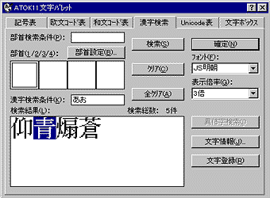
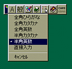
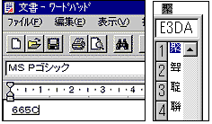
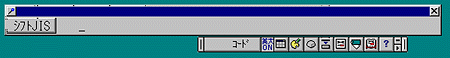

■漢字を探す
●テキストを入力していて、必ず悩まされる問題があります。それは目的の漢字が、かな漢字変換ソフト（フロント・エンド・プロセッサ、略してFEPともいいます。Windowsでは標準装備の「MSIME」、ジャストシステム社の「ATOK」が代表的です）の候補に出てこないことです。
●例えば、「聚落」を入力したいときに「じゅらく」とひらがなで入力して変換しても、「ATOK14」までで表示されるのは「入洛」、「聚楽」などだけです。これは「聚」と「落」という２つの漢字がともにパソコンで使えるにもかかわらず、「聚落という熟語」が「ATOK14までの辞書には登録されていない」ことを示します。
●かな漢字変換ソフトから呼び出せない漢字の探し方は、大きく分けて三つあります。仮名漢字変換ソフトの文字パレットと呼ばれるツールを使う方法。参考図書などで調べた文字のコードで入力する方法。そして、青空文庫が独自に用意した「新JIS漢字総合索引」を使う方法です。
【文字パレットを使う方法】
●MSIME97、98の場合は、MSIMEツールバーの「鉛筆と虫眼鏡（漢字辞典）」、MSIME95の場合は、「虫眼鏡（単漢字変換）」のアイコンをクリックすると、文字パレットが出てきます。

総画数、部首などのタブをクリックし、さらに、それぞれに含まれるフォルダのアイコンをクリックすると、文字の一覧が表示されます。一覧から必要な文字をクリックすると、カーソルのある位置に入力されます。MSIME2000の場合、タブがプルダウンメニューに変わっていますが、基本的な使い方は同じです。
●ATOK11、ATOK12の場合は、ATOKツールバーの「鉛筆とパレット（文字パレット）」のアイコンをクリックすると、文字パレットが出てきます。「漢字検索」のタブをクリックすると、部首、読みで漢字を検索することができます。（ATOK12の場合は、総画数でも検索できます。）「検索結果」のボックスに表示された文字をクリックすると、カーソルのある位置に入力されます。ATOK10、ATOK13など、他のバージョンのATOKにも、文字パレットは用意されています。
●文字パレットの詳しい使い方は、かな漢字変換ソフトのマニュアルを参照してください。
【コードで入力する方法】
●『JIS漢字字典』（日本規格協会）や、複数の出版社から刊行されている『ワープロ漢字辞典』『パソコン・ワープロ漢字辞典』といったものを使うと、探したい文字のコードを調べられます。『新版漢語林』（大修館書店）など、一部の漢和辞典も、JIS漢字コードのコードを併記するようになっています。
●こうした参考図書ではしばしば、一つの漢字に対し、「区点コード」「JISコード」「シフトJISコード」など、いくつかのコードが示してあります。これらは、コード表中で文字が占める位置を、どのようなルールに従って表現するかの違いによるものです。JIS漢字コードという一つのものを表現する、三つの方法と理解してください。
●MSIMEの場合
１）日本語入力をオンにして、下左図のように入力モードを「全角英数」か「半角英数」にします。
２）目的の漢字のコード（JISコードまたはシフトJISコード）を入力します。
３）キーボードのF5キーまたはCtrl＋Yキーを押します。これで、目的の文字が現れます。クリックするか、Enterキーを押すと、カーソルのある位置に入力されます。（下中右図）

●ATOKの場合
１）日本語入力をオンにすると、下図のようなツールバーが表示されます。

２）キーボードのF10キーを押すと、半角モードになります。さらにもう一度押すと、下図のようにシフトJISコードの入力モードになります。「シフトJIS」と書かれているボタンをクリックすると、「区点」「JIS」と切り替わります。

３）目的の文字のシフトJISコード（区点コード、JISコード）を入力します。これで、目的の文字が現れます。現れた文字をクリックすれば、カーソルのある位置に入力されます。
●この他に、ATOKの場合は、F10を押してコード順の一覧を表示することもできます。F10を１回押すと半角モードに、もう一度押すとコード入力モードになり、さらにもう１度押すと記号モードになって、該当するコード表の先頭から10文字ずつ一覧が出てきます。上下矢印でページ移動が、左右矢印で文字選択ができます。文字をクリックするか、選択してEnterキーを押すと、カーソルのある位置に入力されます。「記号モード」と名付けられていますが、Windowsで扱える文字コードの文字は、すべてこの方法で入力できます。
●MSIMEの場合も、環境設定で「テンプレート」を「ATOK」にしておけば、F10キーを２回押すと該当するコードの先頭から一覧が出てきます。ただし、この設定では、前述したF5キーまたはCtrl+Yキーによる変換はできません。
【新JIS漢字総合索引の利用】
 ●新JIS漢字総合索引は、「部首・画数索引」、「音訓索引」と、青空文庫の入力でよく使う記号を集めた「記号一覧」からなる、電子索引です。部首・画数索引を使えば、部首と画数から、音訓索引を使えば漢字の読みから、目指す漢字を探せます。（右は、「じゅ」という読みから、音訓索引を使って「聚」を探した例。）
●新JIS漢字総合索引は、「部首・画数索引」、「音訓索引」と、青空文庫の入力でよく使う記号を集めた「記号一覧」からなる、電子索引です。部首・画数索引を使えば、部首と画数から、音訓索引を使えば漢字の読みから、目指す漢字を探せます。（右は、「じゅ」という読みから、音訓索引を使って「聚」を探した例。）
●見つかった漢字は、コピーしてエディターやワープロにペーストできます。
●この索引を使うためには、いくつかのソフトとフォント、ファイルが必要です。求められるものを、「青空文庫 「明日の硯箱」」にリストアップしました。導入時に少し手間がかかりますが、使うことのできる文字を確実に探せます。必要なフォントやファイルは全て無料で入手できますので、ゆっくりステップを踏んで、是非、索引の導入にチャレンジしてください。
●新JIS漢字総合索引には、第1〜第4水準までの漢字を収録してありますが、青空文庫の入力に使えるのは、第1第2水準の文字に限られます。第3第4水準の漢字は、使わないでください。
●新JIS漢字総合索引の成り立ちと使い方は、【「新JIS漢字総合索引」を使ってみよう】で詳しく説明しています。この解説を含む、「新JIS漢字時代の扉を開こう！」と名付けた文書では、JIS漢字コードに関して、青空文庫の活動を続けていく上で必要な情報をまとめて解説しています。
【入力時に使える文字】
●青空文庫の入力は、JIS X 0201で定義され、半角で表示されるラテン文字、数字、記号と、JIS X 0208で定義され、全角で表示される漢字（第1水準と第2水準）、かな、ラテン文字、ギリシア文字、キリール文字、数字、記号によって行います。
●JIS X 0208（JIS X 0201の文字は、ここにすべて含まれます。）にない文字を、外字と呼びます。
●WindowsやMacintoshでは、JIS X 0208のコード表の空き領域に、独自に文字を割り振って、外字の一部を使えるようにしています。
けれど、メーカー独自の拡張によって使えるようになった外字には、他の機種で使えるという保証がありません。
●独自拡張によって使えるようになった外字は、青空文庫では用いません。
半角で表示される、JIS X 0201のカタカナも使いません。
【外字の処理】
●外字は、入力者注で処理してください。例えば、
の「 」は、青空文庫で使える第1第2水準の中にはありません。こうした場合には、
」は、青空文庫で使える第1第2水準の中にはありません。こうした場合には、
喉を掻き※［＃「てへん＋劣」、読みは「むし」、30-16］って
のように、代わりに「※」（区点コード0208、JISコード2228、シフトJISコード81A6）を入れ、さらに元の文字の形についての説明と読みを加えます。そのあとには、「ページ-行」の形式で底本の何ページ・何行目にあるかを記述します。
●外字の形を説明する際、左右に並んでいる部分は、「＋」（区点コード0160、JISコード215C、シフトJISコード817B）でつないでください。「たれ」や「にょう」との組み合わせにも、「＋」を用いてください。
「目＋爭」、「登＋おおざと」、「やまいだれ＋音」、「しんにゅう＋台」など
上下の関係にあるものは、「／」（区点コード0131、JISコード213F、シフトJISコード815E）でつないでください。
「くさかんむり／弓」、「白／十」、「山／松」など
上下、左右の関係にあるものを組み合わせて示す際は、「（）」（区点コード0142・0143、JISコード214A・214B、シフトJISコード8169・816A）を補って、位置関係をはっきりさせてください。
「水／（水＋水）」、「（医＋殳）／巫」、 「山＋（老／日）」等
「山＋（老／日）」等
●「＋」や「／」で表しにくい場合には、以下のように説明してもかまいません。
※［＃「糾」の「糸」に代えて「虫」、読みは「きゅう」、145-1］
●外字は、多くの場合、底本でもルビ付きで使われています。上記の例にルビがついて、
となっている場合には、
喉を掻き※［＃「てへん＋劣」、30-16］《むし》って
のように入力します。
●外字注記はかつて、以下のように書いていました。
喉を掻き※［＃「※」は「てへん＋劣」、読みは「むし」、30-16］って
過去のファイルにさかのぼって、下線部を略した現在の形にそろえることは当面行いませんが、より簡潔な現在の形を推奨します。
【異機種間の互換性】
●JIS X 0208の空き領域にどんな外字が埋め込まれているかは、メーカー（OS）によって異なります。例えば、Windowsで入力した修飾数字（MSIMEの特殊文字、ATOKの丸数字）の「○付きの１」（区点コード1301、JISコード2D21、シフトJISコード8740）は、Macintoshでは「（日）」と表示されます。
●このような「異機種間の互換性のない文字」は、
１［＃「１」は底本では○付き数字］インターネット
のように、JIS X 0208に含まれる文字に置き換えた上で、入力者注を付けてください。
●区点コード0833から1594まで、JISコード2841から2F7Eまで、シフトJISコード84BFから889Eまでに割り振ってある文字や記号は、異機種間の互換性がありません。
●また、区点コード8901〜9294、11501〜11994の拡張文字はWindows独自の割り当てなので異機種間の互換性がありません。
●以上のほか、9301〜11494のユーザ登録外字は、同一機種間でも互換性がありません。
 【微妙な字体差と包摂規準】
【微妙な字体差と包摂規準】
●底本で使われている漢字と入力したものとで、細部の形が微妙に異なっていることがあります。「果たしてこの字を使ってよいのか？」と、迷う場合もあるでしょう。その際、「よいか悪いか」の判断は、用いている漢字コードが「字体の揺れ幅」について定めた、「包摂規準」(１〜185番）にのっとって下します。青空文庫はJIS X 0208を使っていますから、その規準に従って、判断します。（加えて、JIS X 0213で新たに定義された186〜199番にも従います。）
●包摂規準とは、「この差ではコードを区別しない」という約束事の集まりです。ルールのすべては、JIS漢字コードの規格書（『7ビット及び8ビットの2バイト情報交換用符号化漢字集合』日本規格協会）の、「漢字の字体の包摂規準」（11〜23ページ）に定められています。（「JIS
X 0208と0213規格票の包摂関連項目」の「JIS X 0208」の項、参照。）
●ここに定められた包摂規準に従えば、本来、右に示す29文字のAとBのパターンは区別されなければいけません。ところが過去の規格改訂時に犯した誤りとつじつまを合わせるために、例外として「同じコードで入力する」とされています。これらに関しては、底本と表示文字にＡとＢの違いがあったとしても、その差は無視してください。
●JIS X 0208の包摂規準では、しんにゅうの点が一つか二つか、草冠の横画が切れているか否かで、コードは区別されません。画面やプリントアウトの表示と底本にこの差があったとしても、違いは無視してください。
●細かな字体差を無視して入力しても良いのか、それとも外字として注記すべきか判断を迫られたときは、JIS X 0208の「漢字の字体の包摂規準」を参照してください。見きわめが付かなければ、reception@aozora.gr.jpに問い合わせてください。
【旧字入力の支援ツール】
●旧字作品の入力ファイルには、使うべきでない新字や俗字が、しばしば紛れ込んでしまいます。
●これらを見つけ出すために、「校閲君」と名付けたチェック・ツールを用意しました。詳しい使い方は、「旧字ファイルの新字・俗字を、校閲君で洗い出そう！」で説明しています。
●旧字作品の入力が終わったら、青空文庫宛にファイルを送る前に、必ず校閲君でチェックしてください。
●作業の途中で校閲君によるチェックをかければ、どんなものが新字、俗字になりがちか確認できます。その後の作業を正確に進める上では、有効でしょう。
●かつて旧字作品の入力、校正を体験された方は、自分の関わったファイルを校閲君でチェックし直してください。
●旧字、正字に置き換えるべきものが見つかったら、reception@aozora.gr.jpに、ファイルの修正を求めてください。
●入力データの保存は、「テキスト・ファイル（プレーン・テキスト・ファイル）」と呼ばれるファイル形式で行います。テキスト・ファイルとは、「フォント（書体）や文字サイズ、行間、字送りなどの書式指定」をしない、「JIS X 0208で定められている文字と、JIS X 0201で定められている文字だけで構成された」最も単純な文書形式を指します。
●ソフトによっては、保存用に複数のファイル・フォーマットが用意されています。例えば、Windows95に付属のWordpadでは下図のような画面で「テキスト文書」を選択します。

その他のソフトの場合には、「テキスト」「TEXT」などを選択してください。
●保存の際には、ファイル名は小文字のアルファベットを使用します。ファイルフォーマットで「テキスト」を選択して保存すると、大半のソフトでは.txtという拡張子が自動的につきます。
■入力者校正
●プロの入力者、プロの校正者、プロの編集者の共同作業でつくられる市販の書籍でさえ誤植があります。アマチュアである私たちが入力したテキストには「確実に誤りが含まれている」と見なすべきでしょう。
●そこで、入力が完了したら、必ず「入力者校正」を行い、入力データを修正しておいてください。入力者校正は、後述する「原稿つきあわせ」と「素読み」の二段階に分けて行ってください。（→校正の実際）
●ファイルの精度を高めるためには、「できるだけ早い段階でミスを修正しておく」ことが鉄則です。ぜひご協力ください。
■文書の送信
●入力者校正が済んだファイルは、reception@aozora.gr.jp宛にインターネット・メールで送信してください。その際、ファイルには「圧縮」をかけ、「添付ファイル」として処理するようにしてください。
【圧縮】
●インターネットは、パソコンに比べ、処理速度の遅いメディアです。ファイルを圧縮しておけば、送信時間が短縮できます。
●ファイルの圧縮には、専用のソフトが必要です。また、圧縮されたファイルの解凍（復元）にも専用のソフトが必要です。WindowsではWinZip（シェアウェア）を使って「ZIP形式」に圧縮するか、LHA（フリーウェア）を使って「LHA形式」に圧縮するのが一般的です。（ZIP形式、LHA形式に圧縮するソフトは、この他にも多くの種類があります。）青空文庫の呼びかけ人にはMacintoshユーザーもおりますが、Macintoshではどちらの方式にも対応できます（ただし、LHAは「lh5」形式まで）ので、使い慣れた圧縮方式を使ってください。
【ファイル添付】
●インターネット・メールで送信できるのは、「テキスト・データ」だけです。そこで、画像などのバイナリー・データを送信する際には、ファイルを「特殊なテキスト・ファイルに変換して、メールに添付する」必要があります。このような変換を「エンコード」、変換されたファイルを元に戻すことを「デコード」といいます。
●入力ずみのテキスト・ファイルは、エンコードなしでそのまま添付できますし、メールの本文にコピー＆ペーストで組み込むこともできます。しかしながら、メール本文に組み込まれたテキストには、１行１行に強制的に改行コードが付加されてしまいます。また、添付されたテキスト・ファイルは、メール・ソフトによっては、受信の際に自動的に本文に組み込まれてしまいます。圧縮→添付という方法で処理すれば、このようなトラブルを防ぐことができます。
●エンコードは、Windowsの標準であるBase64を指定してください。
●この項でご紹介したフリーウェアやシェアウェアは、パソコン雑誌の付録CD-ROMで入手できます。また、最新版は下記のウェブサイトからダウンロードできます。
◆WinZip＝http://www.winzip.com/
◆LHAおよび各種＝http://www.forest.impress.co.jp/（窓の杜）、http://www.vector.co.jp/（Vector）
【底本の用意】
●送信していただいたテキスト・ファイルは、校正担当の呼びかけ人もしくは工作員の方のところへとまわされ、校正作業に移ります。このとき、当然ながら入力に使用された底本が必要になります。
●現在は、入手が容易であれば、同じ書籍の一番新しい版を購入するようにしています。しかしながら、ときには絶版・品切れのため、古書店などをまわっても入手が不可能な場合があります。そのため、底本もしくはそのコピーを送付していただく必要が出るかもしれません。ご協力をお願いします。
◆「校正」へ｜◆作業マニュアル目次へ